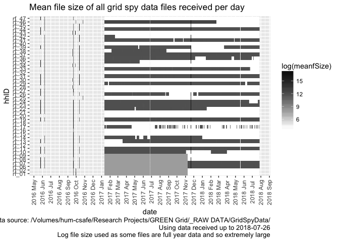
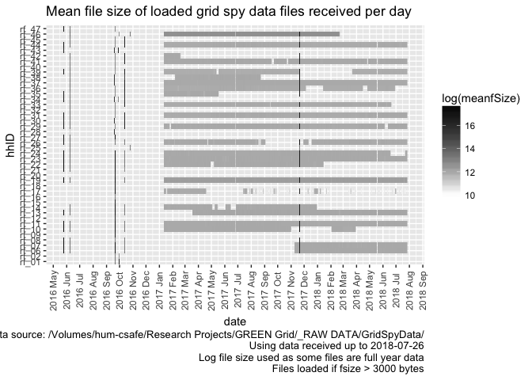
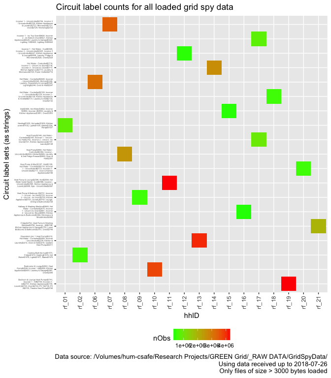
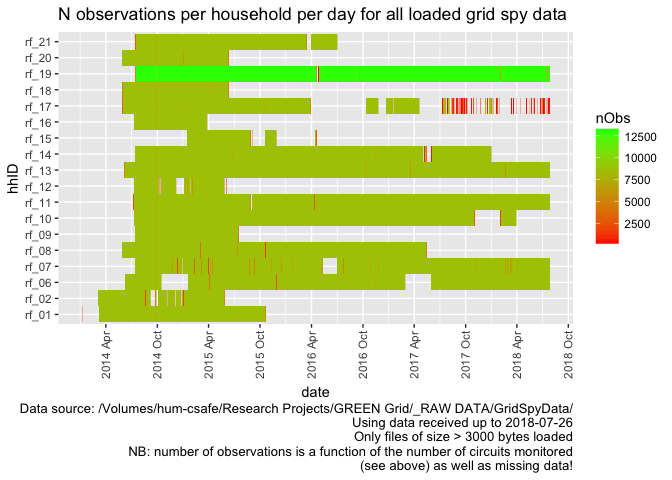
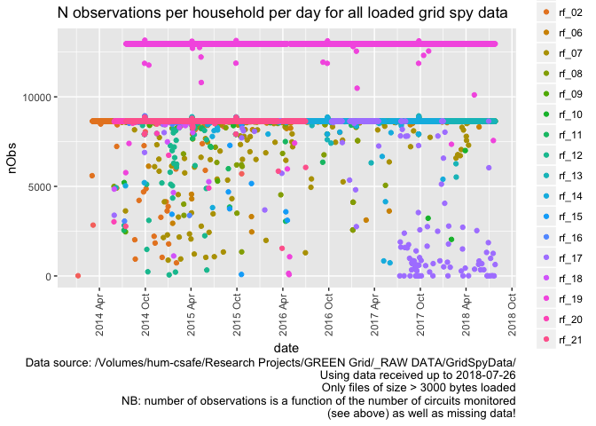
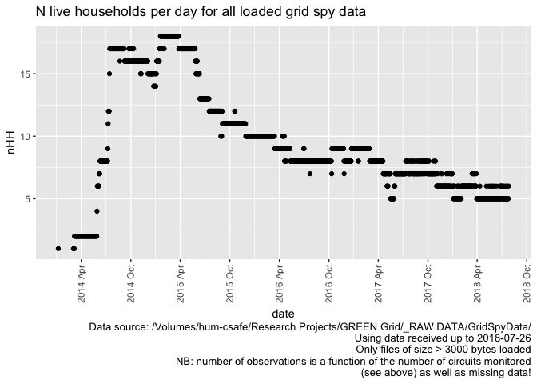

@dataknut)This work is made available under the Creative Commons Attribution-ShareAlike 4.0 International (CC BY-SA 4.0) License.
This means you are free to:
Under the following terms:
For the avoidance of doubt and explanation of terms please refer to the full license notice and legal code.
If you wish to use any of the material from this report please cite as:
The NZ GREEN Grid project recruited a sample of c 25 households in each of two regions of New Zealand. The first sample was recruited in early 2014 and the second in early 2015. Research data includes:
We are working towards releasing ‘clean’ (anonymised) versions of this research data for re-use.
This report is intended to produce summary data quality statistics for the original GREEN grid Grid Spy household power demand monitoring data. This data was used to create a derived ‘safe’ dataset using the code in the nzGREENGridDataR repository.
The cleaned ‘safe’ data has no identifying information such as names, addresses, email addresses, telephone numbers and is therefore safe to share across all partners and to archive/release for research purposes via the UK Data Service’s ReShare service.
The data contains a unique household id which can be used to link it to the anonymised NZ GREEN Grid household level data which will also be archived/release for research purposes via the UK Data Service’s ReShare service.
This report uses data quality statistics produced when processing the original grid spy 1 minute data downloads.
This work was supported by:
The original data files files are stored on the University of Otago’s High-Capacity Central File Storage HCS at:
Data collection is ongoing and this section reports on the availability of data files collected up to the time at which the most recent safe file was created.
## Parsed with column specification:
## cols(
## file = col_character(),
## hhID = col_character(),
## fileName = col_character(),
## fullPath = col_character(),
## fSize = col_integer(),
## fMTime = col_datetime(format = ""),
## fMDate = col_date(format = ""),
## dateColName = col_character(),
## dateExample = col_character(),
## dateFormat = col_character()
## )Overall we have 2,802 files from 5 households. However a large number of files contain no data as the monitoring devices have either been removed (households have moved or withdrawn from the study) or data transfer has failed. We therefore flag these files as ‘to be ignored’ as they have 1 of two file sizes (43 or 2751 bytes).
Of the 2,802 files, 2,125 (75.84%) were labelled as ‘ignore’ as their file sizes indicated that they contained no data.
The following chart shows the distribution of all files over time using their sizes. Note that white indicates the presence of small files which may not contain observations.

## Saving 7 x 5 in imageAs we can see, relatively large files were donwloaded (manually) in June and October 2016 before an automated download process was implemented from January 2017.
The following chart shows the same chart but only for files which we think contain data.

## Saving 7 x 5 in imageAs we can see this removes a large number of the autmatically downloaded files.
As noted above, the original data was downloaded in two ways:
Resolving and cleaning these variations and uncertainties have required substantial effort and in some cases the date has had to be inferred from the file names.
The following table lists up to 10 of the ‘date NZ’ files which are set by default - do they look OK to assume the default dateFormat? Compare the file names with the dateExample…
# list default files with NZ time
aList <- fListCompleteDT[dateColName == "date NZ" & dateFormat %like% "default",
.(file, fSize, dateColName, dateExample, dateFormat)]
cap <- paste0("First 10 (max) of ", nrow(aList),
" files with dateColName = 'date NZ' and default dateFormat")
knitr::kable(caption = cap, head(aList))| file | fSize | dateColName | dateExample | dateFormat |
|---|---|---|---|---|
| rf_01/1Jan2014-24May2014at1.csv | 6255737 | date NZ | 2014-01-06 | ymd - default (but day/month value <= 12) |
| rf_06/24May2014-24May2015at1.csv | 19398444 | date NZ | 2014-06-09 | ymd - default (but day/month value <= 12) |
The following table lists up to 10 of the ‘date UTC’ files which are set by default - do they look OK to assume the default dateFormat? Compare the file names with the dateExample…
# list default files with UTC time
aList <- fListCompleteDT[dateColName == "date UTC" & dateFormat %like% "default",
.(file, fSize, dateColName, dateExample, dateFormat)]
cap <- paste0("First 10 (max) of ", nrow(aList),
" files with dateColName = 'date UTC' and default dateFormat")
knitr::kable(caption = cap, head(aList, 10))| file | fSize | dateColName | dateExample | dateFormat |
|---|---|---|---|---|
| rf_06/10Apr2018-11Apr2018at1.csv | 156944 | date UTC | 2018-04-09 | ymd - default (but day/month value <= 12) |
| rf_06/10Dec2017-11Dec2017at1.csv | 156601 | date UTC | 2017-12-09 | ymd - default (but day/month value <= 12) |
| rf_06/10Feb2018-11Feb2018at1.csv | 153353 | date UTC | 2018-02-09 | ymd - default (but day/month value <= 12) |
| rf_06/10Jan2018-11Jan2018at1.csv | 153982 | date UTC | 2018-01-09 | ymd - default (but day/month value <= 12) |
| rf_06/10Jul2018-11Jul2018at1.csv | 158338 | date UTC | 2018-07-09 | ymd - default (but day/month value <= 12) |
| rf_06/10Jun2018-11Jun2018at1.csv | 156641 | date UTC | 2018-06-09 | ymd - default (but day/month value <= 12) |
| rf_06/10Mar2018-11Mar2018at1.csv | 156471 | date UTC | 2018-03-09 | ymd - default (but day/month value <= 12) |
| rf_06/10May2018-11May2018at1.csv | 156683 | date UTC | 2018-05-09 | ymd - default (but day/month value <= 12) |
| rf_06/10Nov2017-11Nov2017at1.csv | 155639 | date UTC | 2017-11-09 | ymd - default (but day/month value <= 12) |
| rf_06/11Apr2018-12Apr2018at1.csv | 157181 | date UTC | 2018-04-10 | ymd - default (but day/month value <= 12) |
After final cleaning, the final date formats are:
| dateColName | dateFormat | nFiles | minDate | maxDate |
|---|---|---|---|---|
| Unknown - ignore as fsize ( 2751 ) < dataThreshold ( 3000 ) | NA | 604 | NA | NA |
| Unknown - ignore as fsize ( 43 ) < dataThreshold ( 3000 ) | NA | 1521 | NA | NA |
| date NZ | dmy - definite | 1 | 27/03/2015 | 27/03/2015 |
| date NZ | mdy - definite | 1 | 5/26/2016 | 5/26/2016 |
| date NZ | ymd - default (but day/month value <= 12) | 2 | 2014-01-06 | 2014-06-09 |
| date NZ | ymd - definite | 6 | 2014-05-24 | 2016-05-26 |
| date UTC | dmy - inferred | 3 | 11-10-16 | 24/03/15 |
| date UTC | ymd - default (but day/month value <= 12) | 265 | 2016-10-11 | 2018-07-12 |
| date UTC | ymd - definite | 399 | 2015-05-24 | 2018-07-17 |
Results to note:
In this section we analyse the data files that have a file size > 3000 bytes and which have been used to create the safe data. Things to note:
The following table shows the number of files per household that are actually processed to make the safe version together with the min/max file save dates (not the observed data dates).
# check files to load
t <- fListCompleteDT[dateColName %like% "date", .(nFiles = .N,
meanSize = mean(fSize),
minFileDate = min(fMDate),
maxFileDate = max(fMDate)), keyby = .(hhID)]
knitr::kable(caption = "Summary of household files to load", t)| hhID | nFiles | meanSize | minFileDate | maxFileDate |
|---|---|---|---|---|
| rf_01 | 3 | 15548174.7 | 2016-09-20 | 2016-09-30 |
| rf_06 | 256 | 616879.7 | 2016-05-25 | 2018-07-19 |
| rf_45 | 4 | 10513812.0 | 2016-06-08 | 2017-11-21 |
| rf_46 | 411 | 605048.1 | 2016-06-08 | 2018-02-21 |
| rf_47 | 3 | 17544847.0 | 2016-05-25 | 2016-09-20 |
The following table shows the number of files for each household with different circuit labels. In theory each household should only have one set of unique circuit labels.
## Parsed with column specification:
## cols(
## hhID = col_character(),
## fullPath = col_character(),
## nObs = col_integer(),
## minDateTime = col_datetime(format = ""),
## maxDateTime = col_datetime(format = ""),
## TZ_orig = col_character(),
## dateFormat = col_character(),
## mDateTime = col_datetime(format = ""),
## fSize = col_integer(),
## nCircuits = col_integer(),
## circuitLabels = col_character()
## )| hhID | circuitLabels | nFiles |
|---|---|---|
| rf_01 | Heating$1633, Hot water$1636, Kitchen power$1632, Lights$1635, Mains$1634, Range$1637 | 3 |
| rf_06 | Hot Water - Controlled$2248, Incomer - Uncontrolled$2249, Kitchen$2246, Laundry, Downstairs & Lounge$2245, Lighting$2244, Oven & Hob$2247 | 256 |
| rf_45 | Heat Pump$4160, Hot Water - Controlled$4158, Incomer - Uncontrolled$4157, Kitchen Appliances$4161, Laundry & Garage Fridge$4162, Lighting$4159 | 4 |
| rf_46 | Heat Pumps (2x) & Power$4232, Heat Pumps (2x) & Power$4399, Hot Water - Controlled$4231, Hot Water - Controlled$4400, Incomer - Uncontrolled$4230, Incomer - Uncontrolled$4401, Incomer Voltage$4405, Kitchen & Bedrooms$4229, Kitchen & Bedrooms$4402, Laundry & Bedrooms$4228, Laundry & Bedrooms$4403, Lighting$4233, Lighting$4404 | 411 |
| rf_47 | Heat Pump & 2 x Bathroom Heat$4171, Incomer - All$4170, Kitchen Power & Heat, Lounge$4174, Laundry, Garage & 2 Bedrooms$4173, Lighting$4172, Wall Oven$4169 | 3 |
Things to note:
If this is not the case then this implies that:
Some or all of these may be true at any given time.
Errors are easy to spot in the following plot where a hhID spans 2 or more circuit labels.

## Saving 7 x 8 in imageThe following table provides more detail to aid error checking. Check for:
If the above plot and this table flag a lot of errors then some re-naming of the circuit labels (column names) may be necessary.
NB: As before, the table is only legible in the html version of this report because latex does a very bad job of wrapping table cell text. A version is saved in /Users/ben/github/dataknut/nzGREENGridDataR/checkStats/circuitLabelMetaDataCheckTable.csv for viewing in e.g. xl.
| hhID | circuitLabels | nFiles | minObsDate | maxObsDate | minFileDate | maxFileDate | nObs |
|---|---|---|---|---|---|---|---|
| rf_01 | Heating$1633, Hot water$1636, Kitchen power$1632, Lights$1635, Mains$1634, Range$1637 | 3 | 2014-01-05 11:00:00 | 2015-10-20 02:50:00 | 2016-09-20 02:58:11 | 2016-09-30 00:16:15 | 855836 |
| rf_06 | Hot Water - Controlled$2248, Incomer - Uncontrolled$2249, Kitchen$2246, Laundry, Downstairs & Lounge$2245, Lighting$2244, Oven & Hob$2247 | 256 | 2014-06-08 12:00:00 | 2018-07-19 11:59:00 | 2016-05-25 10:26:07 | 2018-07-19 16:03:06 | 3108716 |
| rf_45 | Heat Pump$4160, Hot Water - Controlled$4158, Incomer - Uncontrolled$4157, Kitchen Appliances$4161, Laundry & Garage Fridge$4162, Lighting$4159 | 4 | 2015-03-24 11:00:00 | 2016-10-15 01:08:00 | 2016-06-08 03:01:50 | 2017-11-21 01:20:05 | 821472 |
| rf_46 | Heat Pumps (2x) & Power$4232, Heat Pumps (2x) & Power$4399, Hot Water - Controlled$4231, Hot Water - Controlled$4400, Incomer - Uncontrolled$4230, Incomer - Uncontrolled$4401, Incomer Voltage$4405, Kitchen & Bedrooms$4229, Kitchen & Bedrooms$4402, Laundry & Bedrooms$4228, Laundry & Bedrooms$4403, Lighting$4233, Lighting$4404 | 411 | 2015-03-26 11:00:00 | 2018-02-19 22:08:00 | 2016-06-08 03:11:57 | 2018-02-21 15:03:24 | 2529107 |
| rf_47 | Heat Pump & 2 x Bathroom Heat$4171, Incomer - All$4170, Kitchen Power & Heat, Lounge$4174, Laundry, Garage & 2 Bedrooms$4173, Lighting$4172, Wall Oven$4169 | 3 | 2015-03-24 11:00:00 | 2016-05-08 02:38:00 | 2016-05-25 04:53:18 | 2016-09-20 02:51:12 | 1180942 |
The following plots show the number of observations per day per household. In theory we should not see:
If present both of the latter may have been implied by the table above and would have evaded the de-duplication filter which simply checks each complete row against all others within it’s consolidated household dataset (a within household absolute duplicate check).
## Parsed with column specification:
## cols(
## hhID = col_character(),
## date = col_date(format = ""),
## nObs = col_integer(),
## meanPower = col_double(),
## sdPowerW = col_double(),
## minPowerW = col_double(),
## maxPowerW = col_double(),
## circuitLabels = col_character(),
## nCircuits = col_integer()
## )
## Saving 7 x 5 in image
## Saving 7 x 5 in imageThe following table shows the min/max observations per day and min/max dates for each household. As above, we should not see:
We should also not see NA in any row (indicates date conversion errors).
If we do see any of these then we still have data cleaning work to do!
| hhID | minObs | maxObs | meanN_Circuits | minDate | maxDate |
|---|---|---|---|---|---|
| rf_01 | 12 | 8871 | 6.00000 | 2014-01-06 | 2015-10-20 |
| rf_06 | 2460 | 8825 | 6.00000 | 2014-06-09 | 2018-07-19 |
| rf_45 | 4770 | 8758 | 6.00000 | 2015-03-25 | 2016-10-15 |
| rf_46 | 2526 | 19357 | 12.84489 | 2015-03-27 | 2018-02-20 |
| rf_47 | 3156 | 8818 | 6.00000 | 2015-03-25 | 2016-05-08 |
Finally we show the total number of households which we think are still sending data.

## Saving 7 x 5 in imageAnalysis completed in 12.18 seconds ( 0.2 minutes) using knitr in RStudio with R version 3.5.0 (2018-04-23) running on x86_64-apple-darwin15.6.0.
R packages used:
Session info:
## R version 3.5.0 (2018-04-23)
## Platform: x86_64-apple-darwin15.6.0 (64-bit)
## Running under: macOS High Sierra 10.13.6
##
## Matrix products: default
## BLAS: /System/Library/Frameworks/Accelerate.framework/Versions/A/Frameworks/vecLib.framework/Versions/A/libBLAS.dylib
## LAPACK: /Library/Frameworks/R.framework/Versions/3.5/Resources/lib/libRlapack.dylib
##
## locale:
## [1] en_GB.UTF-8/en_GB.UTF-8/en_GB.UTF-8/C/en_GB.UTF-8/en_GB.UTF-8
##
## attached base packages:
## [1] stats graphics grDevices utils datasets methods base
##
## other attached packages:
## [1] kableExtra_0.9.0 knitr_1.20 readr_1.1.1
## [4] nzGREENGrid_0.1.0 rmarkdown_1.10 ggplot2_2.2.1
## [7] hms_0.4.2 lubridate_1.7.4 dplyr_0.7.5
## [10] data.table_1.11.4 nzGREENGridDataR_0.1.0
##
## loaded via a namespace (and not attached):
## [1] progress_1.2.0 tidyselect_0.2.4 reshape2_1.4.3
## [4] purrr_0.2.5 lattice_0.20-35 colorspace_1.3-2
## [7] viridisLite_0.3.0 htmltools_0.3.6 yaml_2.1.19
## [10] rlang_0.2.1 pillar_1.2.3 glue_1.2.0
## [13] sp_1.3-1 bindrcpp_0.2.2 jpeg_0.1-8
## [16] bindr_0.1.1 plyr_1.8.4 stringr_1.3.1
## [19] munsell_0.5.0 gtable_0.2.0 rvest_0.3.2
## [22] RgoogleMaps_1.4.2 mapproj_1.2.6 evaluate_0.10.1
## [25] labeling_0.3 highr_0.7 proto_1.0.0
## [28] Rcpp_0.12.17 geosphere_1.5-7 openssl_1.0.1
## [31] backports_1.1.2 scales_0.5.0 rjson_0.2.20
## [34] png_0.1-7 digest_0.6.15 stringi_1.2.3
## [37] grid_3.5.0 rprojroot_1.3-2 tools_3.5.0
## [40] magrittr_1.5 maps_3.3.0 lazyeval_0.2.1
## [43] tibble_1.4.2 crayon_1.3.4 pkgconfig_2.0.1
## [46] xml2_1.2.0 prettyunits_1.0.2 assertthat_0.2.0
## [49] httr_1.3.1 rstudioapi_0.7 R6_2.2.2
## [52] ggmap_2.6.1 compiler_3.5.0Csárdi, Gábor, and Rich FitzJohn. 2016. Progress: Terminal Progress Bars. https://CRAN.R-project.org/package=progress.
Dowle, M, A Srinivasan, T Short, S Lianoglou with contributions from R Saporta, and E Antonyan. 2015. Data.table: Extension of Data.frame. https://CRAN.R-project.org/package=data.table.
Grolemund, Garrett, and Hadley Wickham. 2011. “Dates and Times Made Easy with lubridate.” Journal of Statistical Software 40 (3): 1–25. http://www.jstatsoft.org/v40/i03/.
R Core Team. 2016. R: A Language and Environment for Statistical Computing. Vienna, Austria: R Foundation for Statistical Computing. https://www.R-project.org/.
Wickham, Hadley. 2009. Ggplot2: Elegant Graphics for Data Analysis. Springer-Verlag New York. http://ggplot2.org.
Wickham, Hadley, and Romain Francois. 2016. Dplyr: A Grammar of Data Manipulation. https://CRAN.R-project.org/package=dplyr.
Wickham, Hadley, Jim Hester, and Romain Francois. 2016. Readr: Read Tabular Data. https://CRAN.R-project.org/package=readr.
Xie, Yihui. 2016. Knitr: A General-Purpose Package for Dynamic Report Generation in R. https://CRAN.R-project.org/package=knitr.
Zhu, Hao. 2018. KableExtra: Construct Complex Table with ’Kable’ and Pipe Syntax. https://CRAN.R-project.org/package=kableExtra.